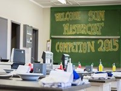

Heritage · June 2024
A history of commitment
A retrospective traces the school’s beginnings as Athlone 2 in 1982 and celebrates decades of service.
Read the original reportA future built on knowledge, character and community.
Garlandale High School first opened in 1982 as Athlone 2. Today, its history and community achievements offer the foundation for a distinctive digital home.
Discover the school story ↗Year the school opened, under the name Athlone 2.
Source: Athlone News, June 2024Recent community reporting highlights alumni-supported opportunities and learner wellbeing. Explore the original articles below.
A retrospective traces the school’s beginnings as Athlone 2 in 1982 and celebrates decades of service.
Read the original reportLocal reporting describes eight bursaries awarded in 2024 through the Garlandale Alumni Association.
Read the original report
Community reporting documents alumni efforts to create a dedicated counselling and support space.
Read the original report Related school photograph: Consumer Studies classroom (2015). Photo source ↗From admissions to school updates, this concept brings key information together in one accessible place.